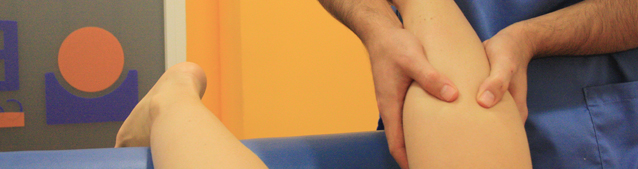

|  | |||
|
|||
Pionera en la aplicación de BIOPUNTURA PODOLÓGICA en Madrid, realiza tratamientos contra el dolor, en recuperación de lesiones (sobretodo en deportistas) coadyudando y dando sostén al tratamiento del fisioterapeuta. Aplica VENDAJES NEUROMUSCULARES para corrección, desinflamación, etc. En : juanetes, dedos garra, fascitis, espolón calcáneos, etc, cuando lo considera conveniente. Recientemente ha comenzado a aplicar AQUAMID r. como tratamiento innovador y definitivo par resolución de callos blandos y duros. |
|||
Fisioterapia | Osteopatía | Pilates | Podología
e
Centro de Fisioterapia Buendía. C/Artistas 57 Madrid ( Cuatro Caminos - Nuevos Ministerios ) Tlf: 91 534 94 76
www.fisioterapiabuendia.com | © Todos los Derechos Reservados